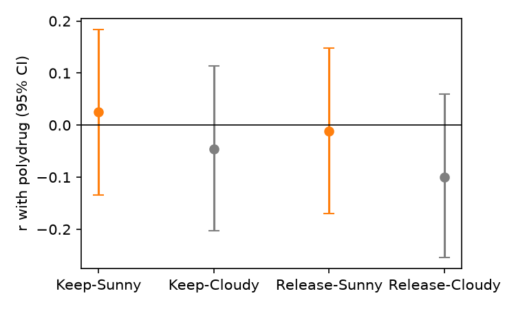

Question. In a sequential fishing risk game, is the correlation between risk taking (adjusted casting score) and real-world drug use (weighted polydrug score) larger in the sunny conditions (pond visible) than in the cloudy conditions (pond hidden)? Predicted sign of the sunny-minus-cloudy contrast: positive.
Data and sample. Replication data: the cleaned per-participant file (d10, 161 participants who completed the game; duplicate program entries already removed and the restarted session dropped). Adjusted casting score per condition (Keep-Sunny KS, Keep-Cloudy KC, Release-Sunny RS, Release-Cloudy RC) = mean casts on rounds the participant stopped voluntarily, all rounds in the trial file (practice-flagged rounds included, as the cleaning specifies). Exclusions: 8 participants with no drug-use score (questionnaire not completed). N = 153. I recomputed the four casting scores from the raw trial file (d08) and they match d10 exactly; the polydrug scores match d09 exactly.
Test (named in advance). Pearson r of polydrug with each casting score, Fisher z, and the Meng, Rosenthal & Rubin (1992) contrast test for correlated correlations with weights (+1, −1, +1, −1) on (KS, KC, RS, RC), r_x = median of the six inter-correlations of the casting scores. The claim holds if Z > 0 with two-sided p < .05.
Results.
| Condition | r with polydrug | 95% CI |
|---|---|---|
| Keep-Sunny | +0.026 | [−0.134, +0.183] |
| Keep-Cloudy | −0.046 | [−0.203, +0.114] |
| Release-Sunny | −0.011 | [−0.170, +0.148] |
| Release-Cloudy | −0.099 | [−0.254, +0.060] |
None of the four correlations differs from zero (all p ≥ .22). Inter-correlations of the casting scores range .24–.55, median r_x = 0.389.
Primary statistic: Z = +1.25, two-sided p = .212 (N = 153). The contrast points in the predicted direction but is not significant. Effect size: mean sunny-minus-cloudy difference in Fisher z = +0.080, bootstrap 95% CI [−0.076, +0.229] (5000 resamples); contrast correlation r = Z/√(Z² + N − 3) = +0.10.

Robustness (not the basis of the conclusion). Practice rounds excluded: Z = +1.00, p = .316. Spearman correlations: Z = +0.76, p = .450. The result does not depend on these choices.
Interpretation. The premise behind the contrast, that the game picks out drug users at all, is not met in this sample: the sunny correlations are themselves about zero (+0.03 and −0.01), so there is little for the cloudy condition to weaken. The interval for the contrast includes zero and also includes moderate positive differences, so this sample rules out a large contrast but not a small one.
Conclusion. The claim does not hold on this data: the sunny-minus-cloudy contrast of drug-use correlations is small and not significant (Z = 1.25, p = .21, N = 153), and the game's scores do not correlate with drug use in any condition.